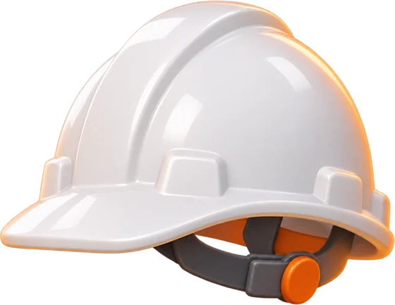

ASO vencendo sem ninguém perceber
A data estava numa pasta, numa planilha que ninguém abre ou na cabeça de uma pessoa só.
Sou técnico em Segurança do Trabalho e também desenvolvo as ferramentas. Na sua empresa, isso vira um painel que avisa antes do ASO, do treinamento, do extintor e do documento do terceiro vencerem.
Clique em Renovar num item vencido: a próxima data é calculada sozinha.
Todo mês alguma coisa vence. E normalmente ninguém avisa. A cena se repete em empresa pequena e média:
A data estava numa pasta, numa planilha que ninguém abre ou na cabeça de uma pessoa só.
Sexta, 17h58, chega o e-mail da empreiteira com a documentação. A obra começa segunda às 7h.
Horas copiando dado de um lugar para outro, e a diretoria só vê o número quando já passou.
Slide lido em voz alta, gente olhando o celular e o conteúdo esquecido no dia seguinte.
Você descobre na auditoria, no cliente pedindo documento ou no acidente. Meu trabalho é você descobrir antes.
ASO, treinamentos, EPI, extintores, manutenção e terceiros num lugar só. Você não precisa entender de NR: eu monto, implanto e deixo a equipe usando.
Linha do tempo de um ASO
3 itens vencem nos próximos 15 dias: ASO de 2 colaboradores da produção e a recarga de 1 extintor do galpão B.
Com os vencimentos no painel, a auditoria vira só mais um dia. Você abre a tela e mostra.
Em campo, com diagnóstico, inspeções e DDS. E em ferramenta, com planilhas, sistemas e painéis que a equipe usa todo dia.
O trabalho de técnico, feito com método: olho a operação, organizo o que existe e deixo a empresa em dia com as NRs.
As ferramentas que eu mesmo desenvolvo para tirar a SST da pasta e colocar na rotina.
Personagens, o seu ambiente e os riscos da sua operação em vídeo, mais um jogo no celular com placar para fixar o conteúdo. Para DDS, integração e SIPAT.
Material de apoio: não substitui o treinamento obrigatório nem emite certificado de NR.
Agora imagina isso com a cara da sua empresa, no celular de cada colaborador.
Quero um exemplo com a minha marcaRápida e sem compromisso. Você conta como a SST funciona hoje e onde dói.
Entendo a operação e olho os documentos e planilhas que já existem. Nada é jogado fora sem motivo.
Preço e escopo definidos desde o início. Você sabe exatamente o que vai receber.
A distância para todo o Brasil, ou presencial em Guarulhos e Grande SP. A equipe sai usando.
Atendo pequenas e médias empresas presencialmente em Guarulhos, São Paulo e Grande SP, e a distância em todo o Brasil.
Além do trabalho em campo, eu mesmo desenvolvo as ferramentas: planilhas com alerta de vencimento, sistemas web, crachás com QR Code e painéis no Power BI. Por isso a solução sai do jeito que a sua operação precisa, e não do jeito que um software pronto obriga.
Não achou a sua dúvida? Manda no WhatsApp que eu respondo.
Presencialmente em Guarulhos, São Paulo e Grande SP. O painel, as planilhas, os sistemas e os treinamentos em 3D são implantados a distância, para empresas de todo o Brasil.
Não. Eu configuro as categorias, os prazos e os alertas. A sua equipe só precisa olhar o que está vermelho ou amarelo e resolver.
Dá, e na maioria das vezes é por ela que eu começo. No diagnóstico eu olho o que já existe e aproveito o que estiver bom.
Depende do tamanho da operação e do que você precisa. O preço e o escopo ficam claros já na primeira conversa, antes de qualquer compromisso.
Esses serviços exigem outro profissional habilitado. Quando aparecem, eu aviso antes e indico um parceiro de confiança, para nada ficar pela metade.
Não. Ele é material de apoio para DDS, integração e SIPAT, feito para o conteúdo ficar na cabeça. Não emite certificado de NR.

Uma conversa online, rápida e sem compromisso. Eu entendo a sua operação e mando a proposta.